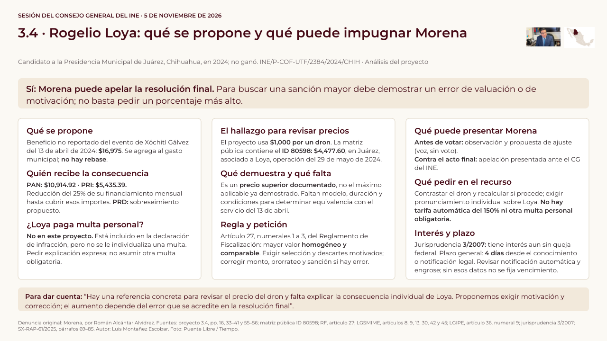

Leer el contenido en texto
SESIÓN DEL CONSEJO GENERAL DEL INE · 5 DE NOVIEMBRE DE 2026 3.4 · Rogelio Loya: qué se propone y qué puede impugnar Morena Candidato a la Presidencia Municipal de Juárez, Chihuahua, en 2024; no ganó. INE/P-COF-UTF/2384/2024/CHIH · Análisis del proyecto Sí: Morena puede apelar la resolución final. Para buscar una sanción mayor debe demostrar un error de valuación o de motivación; no basta pedir un porcentaje más alto. Qué se propone Beneficio no reportado del evento de Xóchitl Gálvez del 13 de abril de 2024: $16,975. Se agrega al gasto municipal; no hay rebase. Quién recibe la consecuencia PAN: $10,914.92 · PRI: $5,435.39. Reducción del 25% de su financiamiento mensual hasta cubrir esos importes. PRD: sobreseimiento propuesto. ¿Loya paga multa personal? No en este proyecto. Está incluido en la declaración de infracción, pero no se le individualiza una multa. Pedir explicación expresa; no asumir otra multa obligatoria. El hallazgo para revisar precios El proyecto usa $1,000 por un dron. La matriz pública contiene el ID 80598: $4,477.60, en Juárez, asociado a Loya, operación del 29 de mayo de 2024. Qué demuestra y qué falta Es un precio superior documentado, no el máximo aplicable ya demostrado. Faltan modelo, duración y condiciones para determinar equivalencia con el servicio del 13 de abril. Regla y petición Artículo 27, numerales 1 a 3, del Reglamento de Fiscalización: mayor valor homogéneo y comparable. Exigir selección y descartes motivados; corregir monto, prorrateo y sanción si hay error. Qué puede presentar Morena Antes de votar: observación y propuesta de ajuste (voz, sin voto). Contra el acto final: apelación presentada ante el CG del INE. Qué pedir en el recurso Contrastar el dron y recalcular si procede; exigir pronunciamiento individual sobre Loya. No hay tarifa automática del 150% ni otra multa personal obligatoria. Interés y plazo Jurisprudencia 3/2007: tiene interés aun sin queja federal. Plazo general: 4 días desde el conocimiento o notificación legal. Revisar notificación automática y engrose; sin esos datos no se fija vencimiento. Para dar cuenta: “Hay una referencia concreta para revisar el precio del dron y falta explicar la consecuencia individual de Loya. Proponemos exigir motivación y corrección; el aumento depende del error que se acredite en la resolución final”. Denuncia original: Morena, por Román Alcántar Alvídrez. Fuentes: proyecto 3.4, pp. 16, 33–41 y 55–56; matriz pública ID 80598; RF, artículo 27; LGSMIME, artículos 8, 9, 13, 30, 42 y 45; LGIPE, artículo 36, numeral 9; jurisprudencia 3/2007; SX-RAP-61/2025, párrafos 69–85. Autor: Luis Montañez Escobar. Foto: Puente Libre / Tiempo.